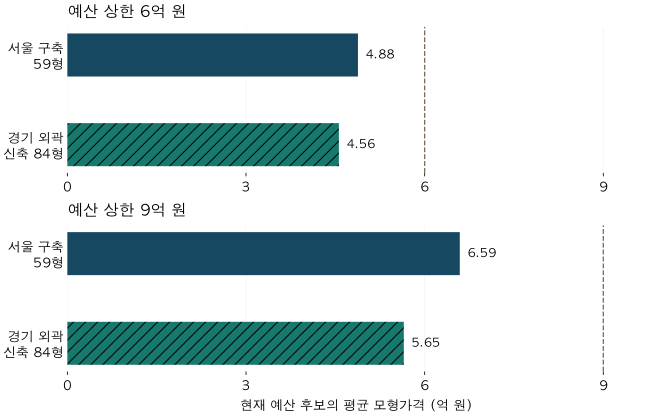

첫 집의 예산 · 같은 예산의 두 선택지
서울 구축 59형 vs 경기 신축 84형: 6억·9억 예산 비교
6억·9억 예산 상한 아래 서울 구축 59형과 경기 외곽 신축 84형의 평균가격·전세가율·거래 빈도를 비교합니다. 짧은 가격 이력과 서로 다른 실제 지출액을 구분해 읽어 보세요.
분석 기간 · 2026.6.25 현재 후보 · 2025~2026년 거래 · 비교 가능한 분기 이력 | 자료 기준일 · 2026-10-04
서울의 작은 구축과 경기 외곽의 큰 신축 사이에서 고민한다면, 예산 상한만 맞추기보다 실제 가격과 주택 조건을 함께 봐야 합니다. 2026년 6월 기준 6억 원 이하 후보의 평균 모형가격은 서울 구축 59형 4.88억 원, 경기 외곽 신축 84형 4.56억 원이었습니다. 이 글의 외곽은 서울 중심 참고점에서 직선거리 30km 이상인 수집 경기 지역입니다.
같은 예산 상한이어도 실제로 비교하는 가격은 다릅니다. 9억 원 이하로 넓히면 두 유형의 평균은 6.59억 원과 5.65억 원이었습니다. 경기 신축 후보의 전세가율은 더 높았지만, 서울 구축 후보의 관측 거래 빈도는 더 높았습니다. 입지·면적·연식이 함께 다른 집단의 결과이므로 어느 쪽이 더 좋은 선택이라는 결론은 아닙니다.
1. 두 선택지와 예산은 어떻게 정했나요?
서울 입지를 택한 작은 구축과 더 바깥의 큰 신축이라는 선택을 구체적인 조건으로 나눴습니다. 서울 구축은 건축연도 기준 30년 이상인 59형, 경기 신축은 0~4년인 84형입니다. 비교 기준일은 2026년 6월 25일입니다. 건축연도는 정확한 입주일이나 사용승인일을 확인한 값과 다릅니다.
59형은 전용 17·18평형, 84형은 전용 25·26평형을 묶은 것입니다. 각각 54.55㎡ 이상 61.16㎡ 미만, 80.99㎡ 이상 87.60㎡ 미만이며 공급면적이 아닙니다. 면적 묶음의 기준을 확인하세요.
외곽은 서울 중구 태평로 1가의 법정동 참고점과 각 법정동 참고점 사이의 직선거리가 30km 이상인 경우로 정했습니다. 실제 단지의 문 앞 거리, 서울시청까지의 통근시간, 철도 접근성을 측정한 값은 아닙니다. 경기 전체나 인천을 포함하지 않으며, 위치 연결이 불확실한 후보는 임의로 가까운 곳이나 먼 곳에 넣지 않았습니다.
6억·9억 원은 예산 상한의 예시입니다. 예산 이하 아파트 재고 분석과 연결하기 위해 사용했으며 대표 가계 예산을 조사해서 정한 금액은 아닙니다. 9억 이하에는 6억 이하도 포함됩니다. 집값 자체의 상한이며 세금·수리비·이사비를 합친 총자금이나 대출 한도가 아닙니다.
2. 같은 예산 상한이면 실제 가격도 같을까요?
아닙니다. 6억 원 이하에서는 두 유형의 평균 모형가격 차이가 비교적 작았지만, 9억 원 이하에서는 차이가 더 커졌습니다. 이 표는 같은 금액을 정확히 지출하는 주택끼리 짝지은 비교가 아닙니다.
| 예산·유형 | 평균 매매가격 | 가격 확인 비중 | 예산 이하 비중 |
|---|---|---|---|
| 6억 이하 · 서울 구축 59형 | 4.88억 원 | 90~100% | 10~20% |
| 9억 이하 · 서울 구축 59형 | 6.59억 원 | 90~100% | 60~70% |
| 6억 이하 · 경기 외곽 신축 84형 | 4.56억 원 | 80~90% | 40~50% |
| 9억 이하 · 경기 외곽 신축 84형 | 5.65억 원 | 80~90% | 70~80% |

‘가격 확인 비중’은 해당 유형의 면적별 세대수가 확인된 재고 중 정상적인 모형가격이 있는 비중입니다. ‘예산 이하 비중’은 그중 가격이 확인된 재고를 분모로 합니다. 두 비중을 전체 주택이나 현재 매물의 비중으로 읽으면 안 됩니다. 표의 포함률은 10%포인트 구간으로 표시했습니다.
평균가격이 낮다고 더 저평가됐다는 뜻은 아닙니다. 59형과 84형의 면적 차이, 서울과 경기의 입지 차이, 연식과 단지 구성 차이가 함께 들어 있습니다. 신축이라는 속성만의 가격 효과나 구축의 재건축 기대를 분리한 분석은 아닙니다.
3. 전세가율은 어느 쪽이 높았나요?
매매와 전세의 모형가격을 함께 확인한 후보에서는 경기 외곽 신축의 전세가율이 높았습니다. 6억 이하에서 서울 구축은 62.3%, 경기 신축은 68.5%였고, 9억 이하에서는 각각 53.0%, 65.4%였습니다.
| 예산·유형 | 매매 평균 | 전세 평균 | 전세가율 | 짝가격 포함 비중 |
|---|---|---|---|---|
| 6억 이하 · 서울 구축 59형 | 5.03억 원 | 3.12억 원 | 62.3% | 50~60% |
| 9억 이하 · 서울 구축 59형 | 6.88억 원 | 3.55억 원 | 53.0% | 70~80% |
| 6억 이하 · 경기 외곽 신축 84형 | 4.47억 원 | 3.04억 원 | 68.5% | 80~90% |
| 9억 이하 · 경기 외곽 신축 84형 | 5.66억 원 | 3.65억 원 | 65.4% | 80~90% |
전세가율은 주택별 전세 보증금을 매매가격으로 나눈 비율입니다. 위 표는 이를 세대수로 가중해 평균했습니다. 따라서 표의 전세 평균을 매매 평균으로 나눈 값과 정확히 같지 않습니다. 두 가격이 모두 있는 주택만 사용하므로 앞 절의 매매 평균과도 대상이 다릅니다.
특히 서울 6억 이하에서 짝가격을 확인한 비중은 현재 예산 후보의 50~60% 구간입니다. 전세 자료가 없는 나머지 후보까지 같은 비율이라고 볼 수 없습니다. 전세가율이 높다는 결과 역시 임대 수요의 강도나 보증금 안전성을 직접 입증하지 않습니다.
모형의 불확실성 범위를 함께 보면
| 예산·유형 | 전세가율 | 모형 범위 |
|---|---|---|
| 6억 이하 · 서울 구축 59형 | 62.3% | 55.2~70.4% |
| 9억 이하 · 서울 구축 59형 | 53.0% | 47.6~59.2% |
| 6억 이하 · 경기 외곽 신축 84형 | 68.5% | 61.7~76.1% |
| 9억 이하 · 경기 외곽 신축 84형 | 65.4% | 59.2~72.2% |
주택별 매매·전세 추정의 아래·위 범위를 이용해 비율 범위를 계산하고 같은 세대수로 평균했습니다. 통계적으로 보정한 신뢰구간은 아닙니다. 6억 이하 조건에서는 두 유형의 범위가 겹칩니다. 작은 차이를 확정적인 우열로 읽지 마세요. 예산 분류 자체도 추정가격을 사용하므로 상한 근처의 개별 후보는 실제 계약과 호가를 다시 확인해야 합니다.
4. 거래 빈도가 높으면 더 쉽게 팔린다는 뜻일까요?
이 비교에서는 서울 구축 후보의 관측 거래 빈도가 더 높았습니다. 다만 매도 소요기간이나 판매 성공률을 측정한 것은 아닙니다. 100세대당 연율 건수는 관측한 계약 건수를 해당 재고로 나누고 관측기간을 연 단위로 환산한 값입니다.
| 예산·유형 | 관측 기간 | 연율 건수 | 현재 후보 포함 비중 |
|---|---|---|---|
| 6억 이하 · 서울 구축 59형 | 2025년 | 3.2 | 90~100% |
| 6억 이하 · 서울 구축 59형 | 2026년 상반기 | 6.8 | 90~100% |
| 9억 이하 · 서울 구축 59형 | 2025년 | 4.3 | 90~100% |
| 9억 이하 · 서울 구축 59형 | 2026년 상반기 | 7.1 | 90~100% |
| 6억 이하 · 경기 외곽 신축 84형 | 2025년 | 2.7 | 80~90% |
| 6억 이하 · 경기 외곽 신축 84형 | 2026년 상반기 | 3.6 | 90~100% |
| 9억 이하 · 경기 외곽 신축 84형 | 2025년 | 2.9 | 80~90% |
| 9억 이하 · 경기 외곽 신축 84형 | 2026년 상반기 | 4.8 | 90~100% |
2026년 상반기 6억 이하에서는 서울 구축 6.8건, 경기 신축 3.6건이었습니다. 9억 이하에서는 7.1건과 4.8건이었습니다. 같은 집이 반복 거래될 수 있고, 팔려고 내놓았지만 팔리지 않은 매물은 분모에 없습니다. 따라서 ‘내 집이 팔릴 확률’로 바꾸면 안 됩니다.
2025년 비교는 그 해가 시작하기 전에 지어진 현재 후보만 포함했습니다. 신축의 경우 그 해에 아직 존재하지 않았을 수 있는 집까지 분모에 넣으면 빈도를 낮추기 때문입니다. 그래서 경기 신축의 2025년 포함 비중은 80~90% 구간이며, 2026년 상반기와 재고 구성이 완전히 같지는 않습니다. 상반기 연율은 계절성을 보정한 연간 전망도 아닙니다.
현재 예산 안에 들어온 후보의 과거 거래를 센 결과입니다. 과거 거래가 당시에도 모두 6억 또는 9억 이하였다는 뜻은 아닙니다. 해제·직거래 등을 제외한 기준을 사용했고, 제외 조건을 달리한 별도 검산에서도 두 유형의 상대적인 방향은 같았습니다.
5. 가격 흐름은 어느 기간까지 비교할 수 있나요?
예산별로 함께 비교할 수 있는 기간이 달랐습니다. 6억 이하에서는 2026년 1분기 말부터 2분기 말까지 한 분기, 9억 이하에서는 2025년 3분기 말부터 2026년 2분기 말까지 약 9개월입니다.
| 예산·유형 | 공통 기간 | 관측점 | 가격 변화 |
|---|---|---|---|
| 6억 이하 · 서울 구축 59형 | 2026Q1→2026Q2 | 2개 분기 | 1.9% |
| 6억 이하 · 경기 외곽 신축 84형 | 2026Q1→2026Q2 | 2개 분기 | -0.1% |
| 9억 이하 · 서울 구축 59형 | 2025Q3→2026Q2 | 4개 분기 | 12.0% |
| 9억 이하 · 경기 외곽 신축 84형 | 2025Q3→2026Q2 | 4개 분기 | 1.1% |
6억 이하의 서울 구축은 한 분기 동안 1.9%, 경기 신축은 −0.1% 변했습니다. 9억 이하의 약 9개월 변화는 각각 12.0%, 1.1%였습니다. 기간이 다른 두 예산의 변화율을 서로 비교해 “예산을 높일수록 더 오른다”고 말할 수 없습니다. 한 분기 변화만으로 장기 추세를 판단할 수도 없습니다.
이 지수는 지금 예산에 들어오는 후보를 고정한 뒤 과거를 돌아본 것입니다. 그때 실제로 고를 수 있었던 집을 미리 골라 투자한 성과가 아닙니다. 각 인접 분기에는 양쪽 가격을 확인한 주택만 연결했고, 현재 후보의 충분한 비중이 남는 경우만 제시했습니다.
6억 이하 · 전체 관찰기간과 빈칸
| 분기 | 서울 구축 59형 | 경기 외곽 신축 84형 |
|---|---|---|
| 2022Q1 | 미제시 | 미제시 |
| 2022Q2 | 미제시 | 미제시 |
| 2022Q3 | 미제시 | 미제시 |
| 2022Q4 | 미제시 | 미제시 |
| 2023Q1 | 미제시 | 미제시 |
| 2023Q2 | 미제시 | 미제시 |
| 2023Q3 | 미제시 | 미제시 |
| 2023Q4 | 미제시 | 미제시 |
| 2024Q1 | 미제시 | 미제시 |
| 2024Q2 | 미제시 | 미제시 |
| 2024Q3 | 미제시 | 미제시 |
| 2024Q4 | 미제시 | 미제시 |
| 2025Q1 | 미제시 | 미제시 |
| 2025Q2 | 미제시 | 미제시 |
| 2025Q3 | 미제시 | 미제시 |
| 2025Q4 | 미제시 | 100.1 |
| 2026Q1 | 98.1 | 100.1 |
| 2026Q2 | 100.0 | 100.0 |
9억 이하 · 전체 관찰기간과 빈칸
| 분기 | 서울 구축 59형 | 경기 외곽 신축 84형 |
|---|---|---|
| 2022Q1 | 미제시 | 미제시 |
| 2022Q2 | 미제시 | 미제시 |
| 2022Q3 | 미제시 | 미제시 |
| 2022Q4 | 미제시 | 미제시 |
| 2023Q1 | 미제시 | 미제시 |
| 2023Q2 | 미제시 | 미제시 |
| 2023Q3 | 미제시 | 미제시 |
| 2023Q4 | 미제시 | 미제시 |
| 2024Q1 | 미제시 | 미제시 |
| 2024Q2 | 미제시 | 미제시 |
| 2024Q3 | 미제시 | 미제시 |
| 2024Q4 | 미제시 | 미제시 |
| 2025Q1 | 86.6 | 미제시 |
| 2025Q2 | 87.4 | 미제시 |
| 2025Q3 | 89.3 | 98.9 |
| 2025Q4 | 90.2 | 98.5 |
| 2026Q1 | 95.6 | 99.5 |
| 2026Q2 | 100.0 | 100.0 |
관찰창은 2022년 1분기부터 남겼습니다. ‘미제시’에는 당시 아직 지어지지 않은 집, 가격 근거가 부족한 집, 집단 비교 기준을 충족하지 못한 경우가 함께 포함됩니다. 빈칸을 가격 변화 0으로 채우거나 최근 짧은 흐름을 과거로 연장하지 않았습니다. 현재 선택지를 설명하는 데 쓸 수 있는 자료와 긴 가격 이력을 설명하는 자료의 범위가 다르기 때문입니다.
6. 내 후보를 비교할 때 무엇을 더 확인해야 하나요?
가장 강한 반론은 “서로 다른 가격·지역·면적의 집을 묶어 놓고 유형의 우열을 말할 수 있는가?”입니다. 이 분석으로는 말할 수 없습니다. 서울 구축은 이 표에서 거래 빈도가 높고, 경기 신축은 전세가율이 높았지만 어느 한 지표가 실거주 만족도나 향후 수익률을 대신하지 않습니다.
외곽의 경계를 25km·35km로 바꾸는 보조 집계도 확인했습니다. 경계 사이에 소수 단지 집합이 있어 수치는 공개하지 않았습니다. 따라서 30km를 어떻게 바꿔도 결론이 유지된다고 주장하지 않습니다. 다른 연식, 다른 면적, 특정 생활권을 택하면 결과가 달라질 수 있습니다.
- 예산 상한과 실제 지출액을 나눕니다. 예를 들어 같은 6억 이하라도 실제 후보의 가격 차이를 먼저 적고, 수리비·거래비용을 별도로 더하세요.
- 통근과 생활 조건을 직접 맞춥니다. 참고점의 직선거리 대신 출퇴근 시간대의 실제 이동시간, 가족에게 필요한 공간과 시설을 비교하세요.
- 가격 자료의 대상을 확인합니다. 이 글의 집단 평균을 개별 호가와 바로 비교하지 말고, 같은 단지·면적의 최근 계약과 층·상태를 확인하세요.
- 전세가율과 거래 빈도를 다른 질문으로 읽습니다. 전자는 두 가격의 관계, 후자는 관측 계약 활동입니다. 보증금 회수 가능성과 매도 기간은 추가 자료가 필요합니다.
실제 후보 두 곳을 같은 지출액과 생활 조건으로 좁힌 뒤 비교하는 것이 다음 단계입니다. 이 글은 그때 어떤 항목을 구분해 적을지 알려 주는 집단 비교입니다.
방법·출처·한계 자세히 보기
자료: 자료 기준일은 2026년 10월 4일이며, 가격 비교일은 2026년 6월 25일입니다. 국토교통부 아파트 매매 실거래 자료와 전월세 실거래 자료를 바탕으로 한 자체 모형가격, 현재 단지 정보와 확인된 면적별 세대수를 사용했습니다. 원자료 안내는 2026년 10월 11일 확인했습니다. 매물 자료는 사용하지 않았습니다.
대상과 가중치: 서울 25구의 건축 후 30년 이상 59형과 수집 경기 36지역 중 30km 외곽 조건을 충족하는 0~4년 84형입니다. 건축연도·면적별 세대수·위치가 확인되지 않은 후보를 임의로 보충하지 않았습니다. 정상적인 직접 추정가격이 있는 주택을 현재 예산 상한으로 분류하고 확인된 세대수로 가중했습니다. 현재 생존 재고를 이용한 회고 비교라 과거 전체 시장을 복원하지 못합니다.
지표별 조건: 가격 집단은 100세대·10단지 이상, 최대 단지의 세대수 기여 20% 이하를 요구했습니다. 전세가율은 동일 단지·면적·시점의 정상 매매·전세 짝에만 계산했습니다. 가격 이력의 인접 분기 연결에는 현재 후보 세대수의 80% 이상이 남고, 두 가격 합에서 최대 단지 기여도 20% 이하여야 합니다. 자료가 없는 분기를 건너뛰어 연결하지 않았습니다.
거래 빈도: 2025년 전체와 2026년 상반기의 정제 매매계약을 각각 셌습니다. 분자와 분모는 창 시작연도 전에 지어진 같은 현재 후보에 맞췄습니다. 계산식은 계약 수÷현재 재고×100×365.25÷관측 일수입니다. 계약일을 사용하며 해제·직거래·토지임대부 등을 제외했습니다. 계약 10건 이상인 집단만 제시했습니다.
검산과 공개: 모형 원자료의 가격 전개와 집계값을 대조하고, 정제 계약 목록과 별도 집계의 계약 수가 일치하는지 확인했습니다. 가격은 0.01억 원, 비율·지수·연율은 소수 첫째 자리로 마지막에 반올림했습니다. 포함률은 10%포인트 구간이며 통계적 오차 범위가 아닙니다. 정확 세대수·계약수·단지 식별자는 공개하지 않습니다. 비교 지표와 전체 분기표의 공개 집계 파일(JSON)을 내려받을 수 있습니다.
분석·집필: 파파펭귄 (Nobot Kang). 에이전트로 자료 대조·산술 검증·초안 작성을 보조했습니다.